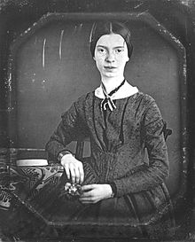

Sunday, November the 20th, 2011
back to: title, date or indexes

Emily's correspondent and critic, Thomas Wentworth Higginson, reported in 1870 that the poet told him “…’ people must have puddings', this very timidly and suggestively, as if they were meteors or comets”.
from Emily Dickinson : Profile Of The Poet As Cook, With Selected Recipes by Guides at the Dickinson Homestead : Nancy Harris Brose, Juliana McGovern Dupre, Wendy Tocher Kohler, and the Resident-Curator, Jean McClure Mudge (Amherst, 1976)